Regional Effects (unknown black-box function)
This tutorial use the same dataset with the previous tutorial, but instead of explaining the known (synthetic) predictive function, we fit a neural network on the data and explain the neural network. This is a more realistic scenario, since in real-world applications we do not know the underlying function and we only have access to the data. We advise the reader to first read the previous tutorial.
import numpy as np
import effector
import keras
import tensorflow as tf
np.random.seed(12345)
tf.random.set_seed(12345)
Simulation example
Data Generating Distribution
We will generate \(N=500\) examples with \(D=3\) features, which are in the uncorrelated setting all uniformly distributed as follows:
| Feature | Description | Distribution |
|---|---|---|
| \(x_1\) | Uniformly distributed between \(-1\) and \(1\) | \(x_1 \sim \mathcal{U}(-1,1)\) |
| \(x_2\) | Uniformly distributed between \(-1\) and \(1\) | \(x_2 \sim \mathcal{U}(-1,1)\) |
| \(x_3\) | Uniformly distributed between \(-1\) and \(1\) | \(x_3 \sim \mathcal{U}(-1,1)\) |
For the correlated setting we keep the distributional assumptions for \(x_2\) and \(x_3\) but define \(x_1\) such that it is highly correlated with \(x_3\) by: \(x_1 = x_3 + \delta\) with \(\delta \sim \mathcal{N}(0,0.0625)\).
def generate_dataset_uncorrelated(N):
x1 = np.random.uniform(-1, 1, size=N)
x2 = np.random.uniform(-1, 1, size=N)
x3 = np.random.uniform(-1, 1, size=N)
return np.stack((x1, x2, x3), axis=-1)
def generate_dataset_correlated(N):
x3 = np.random.uniform(-1, 1, size=N)
x2 = np.random.uniform(-1, 1, size=N)
x1 = x3 + np.random.normal(loc = np.zeros_like(x3), scale = 0.25)
return np.stack((x1, x2, x3), axis=-1)
# generate the dataset for the uncorrelated and correlated setting
N = 1000
X_uncor_train = generate_dataset_uncorrelated(N)
X_uncor_test = generate_dataset_uncorrelated(10000)
X_cor_train = generate_dataset_correlated(N)
X_cor_test = generate_dataset_correlated(10000)
Black-box function
We will use the following linear model with a subgroup-specific interaction term: $$ y = 3x_1I_{x_3>0} - 3x_1I_{x_3\leq0} + x_3$$
On a global level, there is a high heterogeneity for the features \(x_1\) and \(x_3\) due to their interaction with each other. However, this heterogeneity vanishes to 0 if the feature space is separated into subregions:
| Feature | Region | Average Effect | Heterogeneity |
|---|---|---|---|
| \(x_1\) | \(x_3>0\) | \(3x_1\) | 0 |
| \(x_1\) | \(x_3\leq 0\) | \(-3x_1\) | 0 |
| \(x_2\) | all | 0 | 0 |
| \(x_3\) | \(x_3>0\) | \(x_3\) | 0 |
| \(x_3\) | \(x_3\leq 0\) | \(x_3\) | 0 |
def generate_target(X):
f = np.where(X[:,2] > 0, 3*X[:,0] + X[:,2], -3*X[:,0] + X[:,2])
epsilon = np.random.normal(loc = np.zeros_like(X[:,0]), scale = 0.1)
Y = f + epsilon
return(Y)
# generate target for uncorrelated and correlated setting
Y_uncor_train = generate_target(X_uncor_train)
Y_uncor_test = generate_target(X_uncor_test)
Y_cor_train = generate_target(X_cor_train)
Y_cor_test = generate_target(X_cor_test)
Fit a Neural Network
We create a two-layer feedforward Neural Network, a weight decay of 0.01 for 100 epochs. We train two instances of this NN, one on the uncorrelated and one on the correlated setting. In both cases, the NN achieves a Mean Squared Error of about \(0.17\) units.
# Train - Evaluate - Explain a neural network
model_uncor = keras.Sequential([
keras.layers.Dense(10, activation="relu", input_shape=(3,)),
keras.layers.Dense(10, activation="relu", input_shape=(3,)),
keras.layers.Dense(1)
])
optimizer = keras.optimizers.Adam(learning_rate=0.01)
model_uncor.compile(optimizer=optimizer, loss="mse")
model_uncor.fit(X_uncor_train, Y_uncor_train, epochs=100)
model_uncor.evaluate(X_uncor_test, Y_uncor_test)
Epoch 1/100
32/32 [==============================] - 0s 1ms/step - loss: 2.4792
Epoch 2/100
32/32 [==============================] - 0s 1ms/step - loss: 0.8556
Epoch 3/100
32/32 [==============================] - 0s 1ms/step - loss: 0.3830
Epoch 4/100
32/32 [==============================] - 0s 1ms/step - loss: 0.2637
Epoch 5/100
32/32 [==============================] - 0s 1ms/step - loss: 0.2191
Epoch 6/100
32/32 [==============================] - 0s 1ms/step - loss: 0.1843
Epoch 7/100
32/32 [==============================] - 0s 1ms/step - loss: 0.1651
Epoch 8/100
32/32 [==============================] - 0s 2ms/step - loss: 0.1473
Epoch 9/100
32/32 [==============================] - 0s 1ms/step - loss: 0.1447
Epoch 10/100
32/32 [==============================] - 0s 1ms/step - loss: 0.1520
Epoch 11/100
32/32 [==============================] - 0s 1ms/step - loss: 0.1299
Epoch 12/100
32/32 [==============================] - 0s 1ms/step - loss: 0.1255
Epoch 13/100
32/32 [==============================] - 0s 1ms/step - loss: 0.1102
Epoch 14/100
32/32 [==============================] - 0s 1ms/step - loss: 0.1004
Epoch 15/100
32/32 [==============================] - 0s 1ms/step - loss: 0.0913
Epoch 16/100
32/32 [==============================] - 0s 1ms/step - loss: 0.0871
Epoch 17/100
32/32 [==============================] - 0s 2ms/step - loss: 0.0845
Epoch 18/100
32/32 [==============================] - 0s 1ms/step - loss: 0.0844
Epoch 19/100
32/32 [==============================] - 0s 1ms/step - loss: 0.0888
Epoch 20/100
32/32 [==============================] - 0s 1ms/step - loss: 0.0887
Epoch 21/100
32/32 [==============================] - 0s 1ms/step - loss: 0.0725
Epoch 22/100
32/32 [==============================] - 0s 1ms/step - loss: 0.0901
Epoch 23/100
32/32 [==============================] - 0s 1ms/step - loss: 0.0672
Epoch 24/100
32/32 [==============================] - 0s 1ms/step - loss: 0.0747
Epoch 25/100
32/32 [==============================] - 0s 1ms/step - loss: 0.0655
Epoch 26/100
32/32 [==============================] - 0s 2ms/step - loss: 0.0708
Epoch 27/100
32/32 [==============================] - 0s 1ms/step - loss: 0.0687
Epoch 28/100
32/32 [==============================] - 0s 1ms/step - loss: 0.0602
Epoch 29/100
32/32 [==============================] - 0s 2ms/step - loss: 0.0632
Epoch 30/100
32/32 [==============================] - 0s 2ms/step - loss: 0.0638
Epoch 31/100
32/32 [==============================] - 0s 1ms/step - loss: 0.0615
Epoch 32/100
32/32 [==============================] - 0s 1ms/step - loss: 0.0537
Epoch 33/100
32/32 [==============================] - 0s 2ms/step - loss: 0.0536
Epoch 34/100
32/32 [==============================] - 0s 2ms/step - loss: 0.0536
Epoch 35/100
32/32 [==============================] - 0s 2ms/step - loss: 0.0559
Epoch 36/100
32/32 [==============================] - 0s 1ms/step - loss: 0.0705
Epoch 37/100
32/32 [==============================] - 0s 1ms/step - loss: 0.0570
Epoch 38/100
32/32 [==============================] - 0s 1ms/step - loss: 0.0526
Epoch 39/100
32/32 [==============================] - 0s 2ms/step - loss: 0.0562
Epoch 40/100
32/32 [==============================] - 0s 1ms/step - loss: 0.0539
Epoch 41/100
32/32 [==============================] - 0s 2ms/step - loss: 0.0517
Epoch 42/100
32/32 [==============================] - 0s 1ms/step - loss: 0.0614
Epoch 43/100
32/32 [==============================] - 0s 1ms/step - loss: 0.0516
Epoch 44/100
32/32 [==============================] - 0s 2ms/step - loss: 0.0561
Epoch 45/100
32/32 [==============================] - 0s 1ms/step - loss: 0.0663
Epoch 46/100
32/32 [==============================] - 0s 1ms/step - loss: 0.0599
Epoch 47/100
32/32 [==============================] - 0s 1ms/step - loss: 0.0485
Epoch 48/100
32/32 [==============================] - 0s 1ms/step - loss: 0.0547
Epoch 49/100
32/32 [==============================] - 0s 2ms/step - loss: 0.0439
Epoch 50/100
32/32 [==============================] - 0s 1ms/step - loss: 0.0595
Epoch 51/100
32/32 [==============================] - 0s 1ms/step - loss: 0.0571
Epoch 52/100
32/32 [==============================] - 0s 1ms/step - loss: 0.0457
Epoch 53/100
32/32 [==============================] - 0s 1ms/step - loss: 0.0458
Epoch 54/100
32/32 [==============================] - 0s 2ms/step - loss: 0.0424
Epoch 55/100
32/32 [==============================] - 0s 1ms/step - loss: 0.0460
Epoch 56/100
32/32 [==============================] - 0s 1ms/step - loss: 0.0421
Epoch 57/100
32/32 [==============================] - 0s 1ms/step - loss: 0.0578
Epoch 58/100
32/32 [==============================] - 0s 1ms/step - loss: 0.0555
Epoch 59/100
32/32 [==============================] - 0s 1ms/step - loss: 0.0718
Epoch 60/100
32/32 [==============================] - 0s 1ms/step - loss: 0.0568
Epoch 61/100
32/32 [==============================] - 0s 1ms/step - loss: 0.0463
Epoch 62/100
32/32 [==============================] - 0s 1ms/step - loss: 0.0437
Epoch 63/100
32/32 [==============================] - 0s 1ms/step - loss: 0.0479
Epoch 64/100
32/32 [==============================] - 0s 2ms/step - loss: 0.0661
Epoch 65/100
32/32 [==============================] - 0s 2ms/step - loss: 0.0463
Epoch 66/100
32/32 [==============================] - 0s 2ms/step - loss: 0.0418
Epoch 67/100
32/32 [==============================] - 0s 1ms/step - loss: 0.0438
Epoch 68/100
32/32 [==============================] - 0s 1ms/step - loss: 0.0515
Epoch 69/100
32/32 [==============================] - 0s 1ms/step - loss: 0.0455
Epoch 70/100
32/32 [==============================] - 0s 1ms/step - loss: 0.0439
Epoch 71/100
32/32 [==============================] - 0s 1ms/step - loss: 0.0496
Epoch 72/100
32/32 [==============================] - 0s 1ms/step - loss: 0.0485
Epoch 73/100
32/32 [==============================] - 0s 1ms/step - loss: 0.0428
Epoch 74/100
32/32 [==============================] - 0s 1ms/step - loss: 0.0466
Epoch 75/100
32/32 [==============================] - 0s 1ms/step - loss: 0.0391
Epoch 76/100
32/32 [==============================] - 0s 1ms/step - loss: 0.0514
Epoch 77/100
32/32 [==============================] - 0s 2ms/step - loss: 0.0510
Epoch 78/100
32/32 [==============================] - 0s 1ms/step - loss: 0.0448
Epoch 79/100
32/32 [==============================] - 0s 1ms/step - loss: 0.0390
Epoch 80/100
32/32 [==============================] - 0s 1ms/step - loss: 0.0370
Epoch 81/100
32/32 [==============================] - 0s 1ms/step - loss: 0.0376
Epoch 82/100
32/32 [==============================] - 0s 1ms/step - loss: 0.0702
Epoch 83/100
32/32 [==============================] - 0s 1ms/step - loss: 0.0368
Epoch 84/100
32/32 [==============================] - 0s 1ms/step - loss: 0.0357
Epoch 85/100
32/32 [==============================] - 0s 1ms/step - loss: 0.0353
Epoch 86/100
32/32 [==============================] - 0s 1ms/step - loss: 0.0599
Epoch 87/100
32/32 [==============================] - 0s 1ms/step - loss: 0.0434
Epoch 88/100
32/32 [==============================] - 0s 2ms/step - loss: 0.0435
Epoch 89/100
32/32 [==============================] - 0s 1ms/step - loss: 0.0439
Epoch 90/100
32/32 [==============================] - 0s 1ms/step - loss: 0.0344
Epoch 91/100
32/32 [==============================] - 0s 1ms/step - loss: 0.0337
Epoch 92/100
32/32 [==============================] - 0s 1ms/step - loss: 0.0394
Epoch 93/100
32/32 [==============================] - 0s 1ms/step - loss: 0.0389
Epoch 94/100
32/32 [==============================] - 0s 1ms/step - loss: 0.0360
Epoch 95/100
32/32 [==============================] - 0s 1ms/step - loss: 0.0471
Epoch 96/100
32/32 [==============================] - 0s 1ms/step - loss: 0.0361
Epoch 97/100
32/32 [==============================] - 0s 2ms/step - loss: 0.0347
Epoch 98/100
32/32 [==============================] - 0s 1ms/step - loss: 0.0325
Epoch 99/100
32/32 [==============================] - 0s 1ms/step - loss: 0.0366
Epoch 100/100
32/32 [==============================] - 0s 1ms/step - loss: 0.0385
313/313 [==============================] - 0s 1ms/step - loss: 0.0479
0.04788530245423317
model_cor = keras.Sequential([
keras.layers.Dense(10, activation="relu", input_shape=(3,)),
keras.layers.Dense(10, activation="relu", input_shape=(3,)),
keras.layers.Dense(1)
])
optimizer = keras.optimizers.Adam(learning_rate=0.01)
model_cor.compile(optimizer=optimizer, loss="mse")
model_cor.fit(X_cor_train, Y_cor_train, epochs=100)
model_cor.evaluate(X_cor_test, Y_cor_test)
Epoch 1/100
32/32 [==============================] - 0s 1ms/step - loss: 1.7385
Epoch 2/100
32/32 [==============================] - 0s 2ms/step - loss: 0.4965
Epoch 3/100
32/32 [==============================] - 0s 1ms/step - loss: 0.2288
Epoch 4/100
32/32 [==============================] - 0s 2ms/step - loss: 0.1634
Epoch 5/100
32/32 [==============================] - 0s 1ms/step - loss: 0.1332
Epoch 6/100
32/32 [==============================] - 0s 1ms/step - loss: 0.1123
Epoch 7/100
32/32 [==============================] - 0s 1ms/step - loss: 0.0996
Epoch 8/100
32/32 [==============================] - 0s 1ms/step - loss: 0.0914
Epoch 9/100
32/32 [==============================] - 0s 1ms/step - loss: 0.0864
Epoch 10/100
32/32 [==============================] - 0s 1ms/step - loss: 0.0845
Epoch 11/100
32/32 [==============================] - 0s 1ms/step - loss: 0.0782
Epoch 12/100
32/32 [==============================] - 0s 1ms/step - loss: 0.0744
Epoch 13/100
32/32 [==============================] - 0s 1ms/step - loss: 0.0741
Epoch 14/100
32/32 [==============================] - 0s 1ms/step - loss: 0.0689
Epoch 15/100
32/32 [==============================] - 0s 1ms/step - loss: 0.0659
Epoch 16/100
32/32 [==============================] - 0s 1ms/step - loss: 0.0647
Epoch 17/100
32/32 [==============================] - 0s 1ms/step - loss: 0.0599
Epoch 18/100
32/32 [==============================] - 0s 1ms/step - loss: 0.0595
Epoch 19/100
32/32 [==============================] - 0s 1ms/step - loss: 0.0601
Epoch 20/100
32/32 [==============================] - 0s 1ms/step - loss: 0.0546
Epoch 21/100
32/32 [==============================] - 0s 1ms/step - loss: 0.0539
Epoch 22/100
32/32 [==============================] - 0s 2ms/step - loss: 0.0539
Epoch 23/100
32/32 [==============================] - 0s 1ms/step - loss: 0.0514
Epoch 24/100
32/32 [==============================] - 0s 1ms/step - loss: 0.0507
Epoch 25/100
32/32 [==============================] - 0s 1ms/step - loss: 0.0523
Epoch 26/100
32/32 [==============================] - 0s 1ms/step - loss: 0.0510
Epoch 27/100
32/32 [==============================] - 0s 1ms/step - loss: 0.0498
Epoch 28/100
32/32 [==============================] - 0s 1ms/step - loss: 0.0456
Epoch 29/100
32/32 [==============================] - 0s 1ms/step - loss: 0.0452
Epoch 30/100
32/32 [==============================] - 0s 1ms/step - loss: 0.0452
Epoch 31/100
32/32 [==============================] - 0s 1ms/step - loss: 0.0444
Epoch 32/100
32/32 [==============================] - 0s 1ms/step - loss: 0.0432
Epoch 33/100
32/32 [==============================] - 0s 1ms/step - loss: 0.0436
Epoch 34/100
32/32 [==============================] - 0s 1ms/step - loss: 0.0447
Epoch 35/100
32/32 [==============================] - 0s 1ms/step - loss: 0.0460
Epoch 36/100
32/32 [==============================] - 0s 1ms/step - loss: 0.0422
Epoch 37/100
32/32 [==============================] - 0s 1ms/step - loss: 0.0403
Epoch 38/100
32/32 [==============================] - 0s 1ms/step - loss: 0.0401
Epoch 39/100
32/32 [==============================] - 0s 2ms/step - loss: 0.0391
Epoch 40/100
32/32 [==============================] - 0s 1ms/step - loss: 0.0404
Epoch 41/100
32/32 [==============================] - 0s 1ms/step - loss: 0.0367
Epoch 42/100
32/32 [==============================] - 0s 1ms/step - loss: 0.0362
Epoch 43/100
32/32 [==============================] - 0s 1ms/step - loss: 0.0353
Epoch 44/100
32/32 [==============================] - 0s 1ms/step - loss: 0.0400
Epoch 45/100
32/32 [==============================] - 0s 1ms/step - loss: 0.0369
Epoch 46/100
32/32 [==============================] - 0s 1ms/step - loss: 0.0345
Epoch 47/100
32/32 [==============================] - 0s 1ms/step - loss: 0.0334
Epoch 48/100
32/32 [==============================] - 0s 1ms/step - loss: 0.0332
Epoch 49/100
32/32 [==============================] - 0s 1ms/step - loss: 0.0320
Epoch 50/100
32/32 [==============================] - 0s 1ms/step - loss: 0.0341
Epoch 51/100
32/32 [==============================] - 0s 1ms/step - loss: 0.0401
Epoch 52/100
32/32 [==============================] - 0s 1ms/step - loss: 0.0331
Epoch 53/100
32/32 [==============================] - 0s 1ms/step - loss: 0.0308
Epoch 54/100
32/32 [==============================] - 0s 1ms/step - loss: 0.0333
Epoch 55/100
32/32 [==============================] - 0s 1ms/step - loss: 0.0310
Epoch 56/100
32/32 [==============================] - 0s 1ms/step - loss: 0.0311
Epoch 57/100
32/32 [==============================] - 0s 1ms/step - loss: 0.0314
Epoch 58/100
32/32 [==============================] - 0s 2ms/step - loss: 0.0316
Epoch 59/100
32/32 [==============================] - 0s 1ms/step - loss: 0.0320
Epoch 60/100
32/32 [==============================] - 0s 1ms/step - loss: 0.0303
Epoch 61/100
32/32 [==============================] - 0s 1ms/step - loss: 0.0313
Epoch 62/100
32/32 [==============================] - 0s 1ms/step - loss: 0.0280
Epoch 63/100
32/32 [==============================] - 0s 1ms/step - loss: 0.0286
Epoch 64/100
32/32 [==============================] - 0s 1ms/step - loss: 0.0374
Epoch 65/100
32/32 [==============================] - 0s 1ms/step - loss: 0.0306
Epoch 66/100
32/32 [==============================] - 0s 1ms/step - loss: 0.0297
Epoch 67/100
32/32 [==============================] - 0s 1ms/step - loss: 0.0299
Epoch 68/100
32/32 [==============================] - 0s 1ms/step - loss: 0.0280
Epoch 69/100
32/32 [==============================] - 0s 1ms/step - loss: 0.0277
Epoch 70/100
32/32 [==============================] - 0s 1ms/step - loss: 0.0296
Epoch 71/100
32/32 [==============================] - 0s 1ms/step - loss: 0.0251
Epoch 72/100
32/32 [==============================] - 0s 1ms/step - loss: 0.0286
Epoch 73/100
32/32 [==============================] - 0s 1ms/step - loss: 0.0276
Epoch 74/100
32/32 [==============================] - 0s 1ms/step - loss: 0.0309
Epoch 75/100
32/32 [==============================] - 0s 1ms/step - loss: 0.0262
Epoch 76/100
32/32 [==============================] - 0s 1ms/step - loss: 0.0276
Epoch 77/100
32/32 [==============================] - 0s 1ms/step - loss: 0.0275
Epoch 78/100
32/32 [==============================] - 0s 1ms/step - loss: 0.0274
Epoch 79/100
32/32 [==============================] - 0s 1ms/step - loss: 0.0262
Epoch 80/100
32/32 [==============================] - 0s 1ms/step - loss: 0.0238
Epoch 81/100
32/32 [==============================] - 0s 1ms/step - loss: 0.0263
Epoch 82/100
32/32 [==============================] - 0s 1ms/step - loss: 0.0246
Epoch 83/100
32/32 [==============================] - 0s 1ms/step - loss: 0.0241
Epoch 84/100
32/32 [==============================] - 0s 1ms/step - loss: 0.0277
Epoch 85/100
32/32 [==============================] - 0s 1ms/step - loss: 0.0274
Epoch 86/100
32/32 [==============================] - 0s 2ms/step - loss: 0.0260
Epoch 87/100
32/32 [==============================] - 0s 1ms/step - loss: 0.0235
Epoch 88/100
32/32 [==============================] - 0s 1ms/step - loss: 0.0245
Epoch 89/100
32/32 [==============================] - 0s 1ms/step - loss: 0.0307
Epoch 90/100
32/32 [==============================] - 0s 1ms/step - loss: 0.0253
Epoch 91/100
32/32 [==============================] - 0s 1ms/step - loss: 0.0259
Epoch 92/100
32/32 [==============================] - 0s 1ms/step - loss: 0.0252
Epoch 93/100
32/32 [==============================] - 0s 1ms/step - loss: 0.0266
Epoch 94/100
32/32 [==============================] - 0s 1ms/step - loss: 0.0238
Epoch 95/100
32/32 [==============================] - 0s 1ms/step - loss: 0.0233
Epoch 96/100
32/32 [==============================] - 0s 1ms/step - loss: 0.0235
Epoch 97/100
32/32 [==============================] - 0s 1ms/step - loss: 0.0247
Epoch 98/100
32/32 [==============================] - 0s 1ms/step - loss: 0.0322
Epoch 99/100
32/32 [==============================] - 0s 1ms/step - loss: 0.0284
Epoch 100/100
32/32 [==============================] - 0s 1ms/step - loss: 0.0232
313/313 [==============================] - 0s 922us/step - loss: 0.0374
0.03737838566303253
PDP
Uncorrelated setting
Global PDP
pdp = effector.PDP(data=X_uncor_train, model=model_uncor, feature_names=['x1','x2','x3'], target_name="Y")
pdp.plot(feature=0, centering=True, show_avg_output=False, heterogeneity="ice", y_limits=[-5, 5])
pdp.plot(feature=1, centering=True, show_avg_output=False, heterogeneity="ice", y_limits=[-5, 5])
pdp.plot(feature=2, centering=True, show_avg_output=False, heterogeneity="ice", y_limits=[-5, 5])
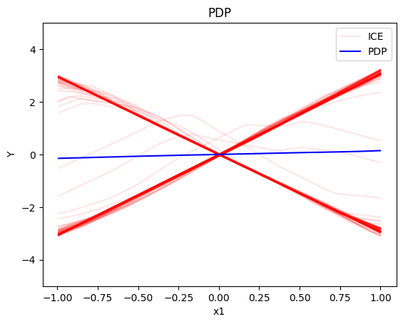
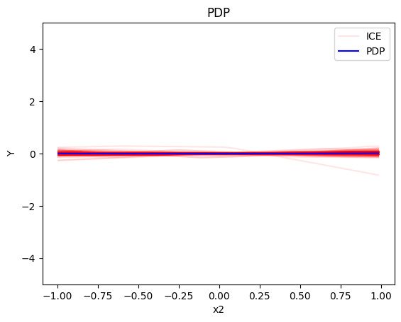
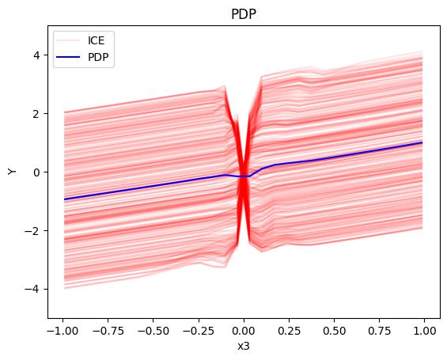
Regional PDP
regional_pdp = effector.RegionalPDP(data=X_uncor_train, model=model_uncor, feature_names=['x1','x2','x3'], axis_limits=np.array([[-1,1],[-1,1],[-1,1]]).T)
regional_pdp.fit(features="all", heter_pcg_drop_thres=0.3, nof_candidate_splits_for_numerical=11)
100%|██████████| 3/3 [00:00<00:00, 5.94it/s]
regional_pdp.show_partitioning(features=0)
Feature 0 - Full partition tree:
Node id: 0, name: x1, heter: 1.72 || nof_instances: 1000 || weight: 1.00
Node id: 1, name: x1 | x3 <= -0.0, heter: 0.32 || nof_instances: 498 || weight: 0.50
Node id: 2, name: x1 | x3 > -0.0, heter: 0.32 || nof_instances: 502 || weight: 0.50
--------------------------------------------------
Feature 0 - Statistics per tree level:
Level 0, heter: 1.72
Level 1, heter: 0.32 || heter drop: 1.40 (81.48%)
regional_pdp.plot(feature=0, node_idx=1, heterogeneity="ice", y_limits=[-5, 5])
regional_pdp.plot(feature=0, node_idx=2, heterogeneity="ice", y_limits=[-5, 5])
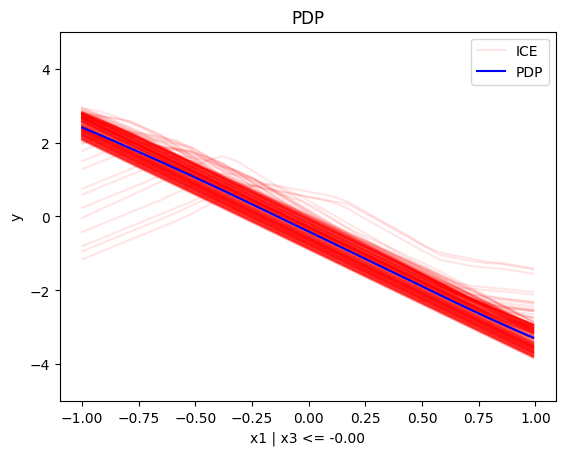
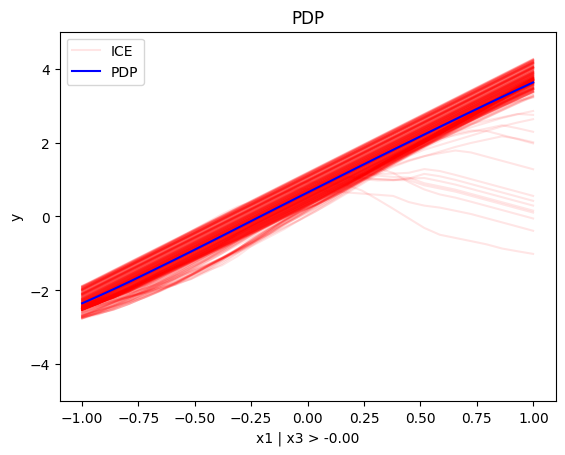
regional_pdp.show_partitioning(features=1)
Feature 1 - Full partition tree:
Node id: 0, name: x2, heter: 1.81 || nof_instances: 1000 || weight: 1.00
--------------------------------------------------
Feature 1 - Statistics per tree level:
Level 0, heter: 1.81
regional_pdp.show_partitioning(features=2)
Feature 2 - Full partition tree:
Node id: 0, name: x3, heter: 1.73 || nof_instances: 1000 || weight: 1.00
Node id: 1, name: x3 | x1 <= -0.0, heter: 0.86 || nof_instances: 494 || weight: 0.49
Node id: 2, name: x3 | x1 > -0.0, heter: 0.86 || nof_instances: 506 || weight: 0.51
--------------------------------------------------
Feature 2 - Statistics per tree level:
Level 0, heter: 1.73
Level 1, heter: 0.86 || heter drop: 0.87 (50.34%)
regional_pdp.plot(feature=2, node_idx=1, heterogeneity="ice", centering=True, y_limits=[-5, 5])
regional_pdp.plot(feature=2, node_idx=2, heterogeneity="ice", centering=True, y_limits=[-5, 5])
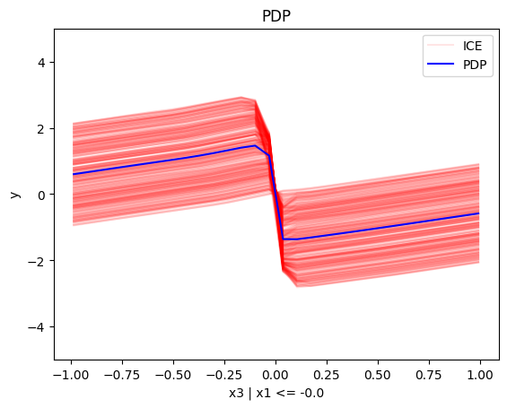
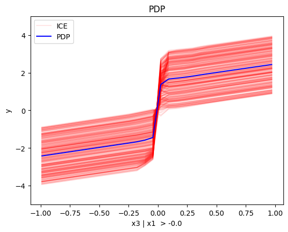
Conclusion
For the Global PDP:
- the average effect of \(x_1\) is \(0\) with some heterogeneity implied by the interaction with \(x_1\). The heterogeneity is expressed with two opposite lines; \(-3x_1\) when \(x_1 \leq 0\) and \(3x_1\) when \(x_1 >0\)
- the average effect of \(x_2\) to be \(0\) without heterogeneity
- the average effect of \(x_3\) to be \(x_3\) with some heterogeneity due to the interaction with \(x_1\). The heterogeneity is expressed with a discontinuity around \(x_3=0\), with either a positive or a negative offset depending on the value of \(x_1^i\)
For the Regional PDP:
- For \(x_1\), the algorithm finds two regions, one for \(x_3 \leq 0\) and one for \(x_3 > 0\)
- when \(x_3>0\) the effect is \(3x_1\)
- when \(x_3 \leq 0\), the effect is \(-3x_1\)
- For \(x_2\) the algorithm does not find any subregion
- For \(x_3\), there is a change in the offset:
- when \(x_1>0\) the line is \(x_3 - 3x_1^i\) in the first half and \(x_3 + 3x_1^i\) later
- when \(x_1<0\) the line is \(x_3 + 3x_1^i\) in the first half and \(x_3 - 3x_1^i\) later
Correlated setting
Global PDP
pdp = effector.PDP(data=X_cor_train, model=model_cor, feature_names=['x1','x2','x3'], target_name="Y")
pdp.plot(feature=0, centering=True, show_avg_output=False, heterogeneity="ice", y_limits=[-5, 5])
pdp.plot(feature=1, centering=True, show_avg_output=False, heterogeneity="ice", y_limits=[-5, 5])
pdp.plot(feature=2, centering=True, show_avg_output=False, heterogeneity="ice", y_limits=[-5, 5])
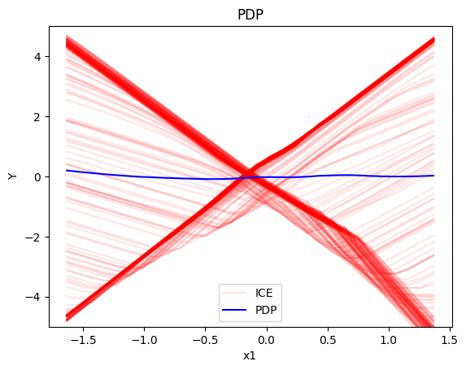
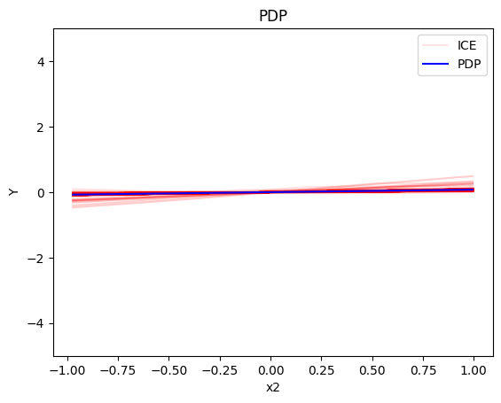
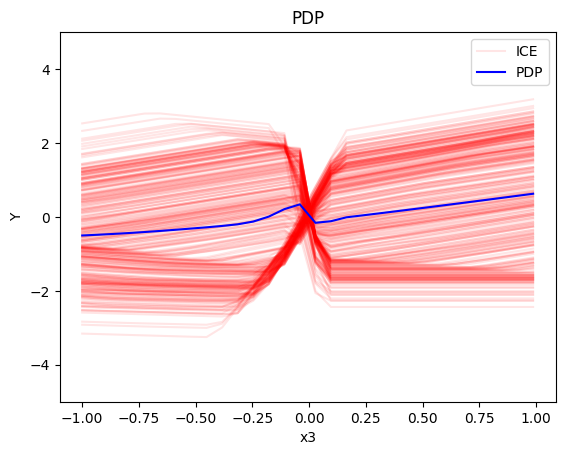
Regional-PDP
regional_pdp = effector.RegionalPDP(data=X_cor_train, model=model_cor, feature_names=['x1','x2','x3'], axis_limits=np.array([[-1,1],[-1,1],[-1,1]]).T)
regional_pdp.fit(features="all", heter_pcg_drop_thres=0.4, nof_candidate_splits_for_numerical=11)
100%|██████████| 3/3 [00:00<00:00, 5.85it/s]
regional_pdp.show_partitioning(features=0)
Feature 0 - Full partition tree:
Node id: 0, name: x1, heter: 1.63 || nof_instances: 1000 || weight: 1.00
Node id: 1, name: x1 | x3 <= -0.0, heter: 0.42 || nof_instances: 491 || weight: 0.49
Node id: 2, name: x1 | x3 > -0.0, heter: 0.41 || nof_instances: 509 || weight: 0.51
--------------------------------------------------
Feature 0 - Statistics per tree level:
Level 0, heter: 1.63
Level 1, heter: 0.41 || heter drop: 1.22 (74.70%)
regional_pdp.plot(feature=0, node_idx=1, heterogeneity="ice", centering=True, y_limits=[-5, 5])
regional_pdp.plot(feature=0, node_idx=2, heterogeneity="ice", centering=True, y_limits=[-5, 5])
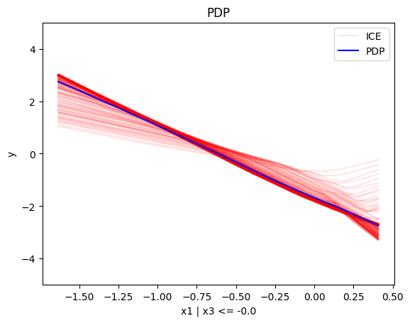
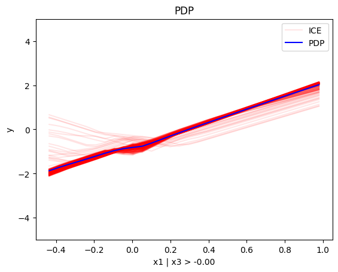
regional_pdp.show_partitioning(features=1)
Feature 1 - Full partition tree:
Node id: 0, name: x2, heter: 1.28 || nof_instances: 1000 || weight: 1.00
--------------------------------------------------
Feature 1 - Statistics per tree level:
Level 0, heter: 1.28
regional_pdp.show_partitioning(features=2)
Feature 2 - Full partition tree:
Node id: 0, name: x3, heter: 1.39 || nof_instances: 1000 || weight: 1.00
Node id: 1, name: x3 | x1 <= -0.13, heter: 0.71 || nof_instances: 447 || weight: 0.45
Node id: 2, name: x3 | x1 > -0.13, heter: 0.79 || nof_instances: 553 || weight: 0.55
--------------------------------------------------
Feature 2 - Statistics per tree level:
Level 0, heter: 1.39
Level 1, heter: 0.75 || heter drop: 0.64 (45.97%)
regional_pdp.plot(feature=2, node_idx=1, heterogeneity="ice", centering=True, y_limits=[-5, 5])
regional_pdp.plot(feature=2, node_idx=2, heterogeneity="ice", centering=True, y_limits=[-5, 5])
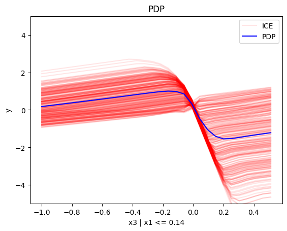
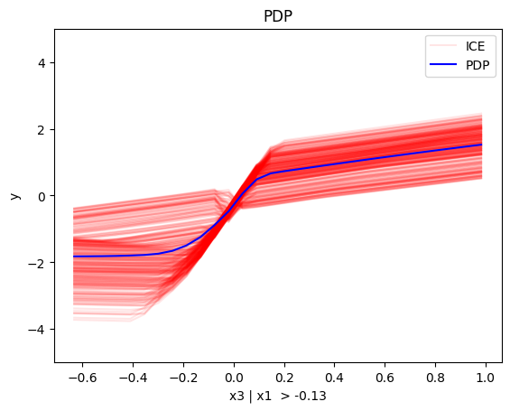
Conclusion
(RH)ALE
def model_uncor_jac(x):
x_tensor = tf.convert_to_tensor(x, dtype=tf.float32)
with tf.GradientTape() as t:
t.watch(x_tensor)
pred = model_uncor(x_tensor)
grads = t.gradient(pred, x_tensor)
return grads.numpy()
def model_cor_jac(x):
x_tensor = tf.convert_to_tensor(x, dtype=tf.float32)
with tf.GradientTape() as t:
t.watch(x_tensor)
pred = model_cor(x_tensor)
grads = t.gradient(pred, x_tensor)
return grads.numpy()
Uncorrelated setting
Global RHALE
rhale = effector.RHALE(data=X_uncor_train, model=model_uncor, model_jac=model_uncor_jac, feature_names=['x1','x2','x3'], target_name="Y")
binning_method = effector.binning_methods.Fixed(10, min_points_per_bin=0)
rhale.fit(features="all", binning_method=binning_method, centering=True)
rhale.plot(feature=0, centering=True, heterogeneity="std", show_avg_output=False, y_limits=[-5, 5], dy_limits=[-5, 5])
rhale.plot(feature=1, centering=True, heterogeneity="std", show_avg_output=False, y_limits=[-5, 5], dy_limits=[-5, 5])
rhale.plot(feature=2, centering=True, heterogeneity="std", show_avg_output=False, y_limits=[-5, 5], dy_limits=[-5, 5])
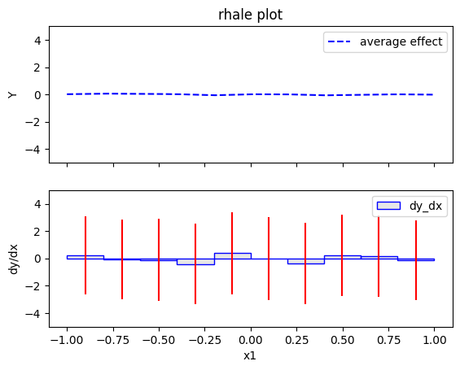
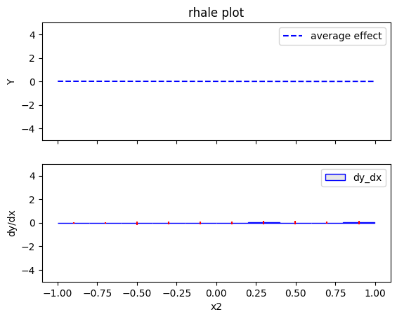
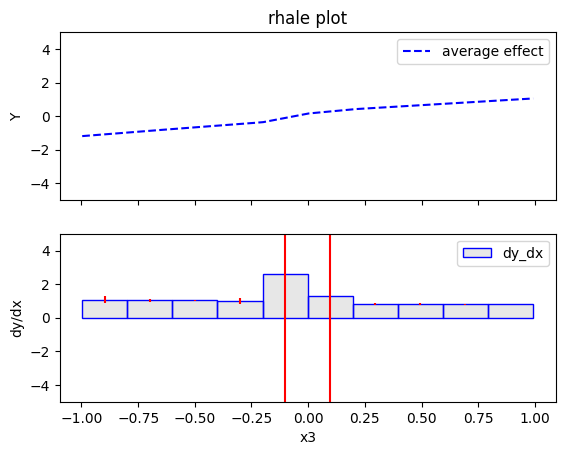
Regional RHALE
regional_rhale = effector.RegionalRHALE(
data=X_uncor_train,
model=model_uncor,
model_jac= model_uncor_jac,
feature_names=['x1', 'x2', 'x3'],
axis_limits=np.array([[-1, 1], [-1, 1], [-1, 1]]).T)
binning_method = effector.binning_methods.Fixed(11, min_points_per_bin=0)
regional_rhale.fit(
features="all",
heter_pcg_drop_thres=0.6,
binning_method=binning_method,
nof_candidate_splits_for_numerical=11
)
100%|██████████| 3/3 [00:00<00:00, 9.01it/s]
regional_rhale.show_partitioning(features=0)
Feature 0 - Full partition tree:
Node id: 0, name: x1, heter: 5.92 || nof_instances: 1000 || weight: 1.00
Node id: 1, name: x1 | x3 <= -0.0, heter: 0.56 || nof_instances: 498 || weight: 0.50
Node id: 2, name: x1 | x3 > -0.0, heter: 0.67 || nof_instances: 502 || weight: 0.50
--------------------------------------------------
Feature 0 - Statistics per tree level:
Level 0, heter: 5.92
Level 1, heter: 0.62 || heter drop: 5.30 (89.61%)
regional_rhale.plot(feature=0, node_idx=1, heterogeneity="std", centering=True, y_limits=[-5, 5])
regional_rhale.plot(feature=0, node_idx=2, heterogeneity="std", centering=True, y_limits=[-5, 5])
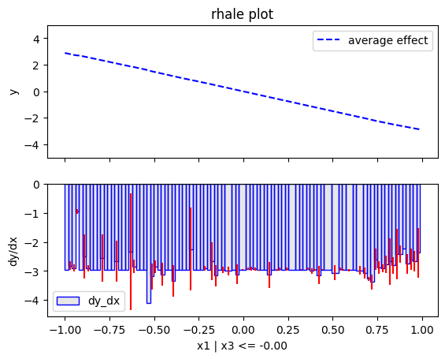
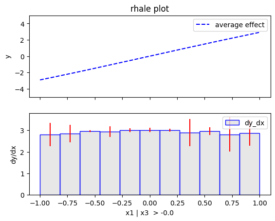
regional_rhale.show_partitioning(features=1)
Feature 1 - Full partition tree:
Node id: 0, name: x2, heter: 0.29 || nof_instances: 1000 || weight: 1.00
--------------------------------------------------
Feature 1 - Statistics per tree level:
Level 0, heter: 0.29
regional_rhale.show_partitioning(features=2)
Feature 2 - Full partition tree:
Node id: 0, name: x3, heter: 6.48 || nof_instances: 1000 || weight: 1.00
--------------------------------------------------
Feature 2 - Statistics per tree level:
Level 0, heter: 6.48
Conclusion
Correlated setting
Global RHALE
rhale = effector.RHALE(data=X_cor_train, model=model_cor, model_jac=model_cor_jac, feature_names=['x1','x2','x3'], target_name="Y")
binning_method = effector.binning_methods.Fixed(10, min_points_per_bin=0)
rhale.fit(features="all", binning_method=binning_method, centering=True)
rhale.plot(feature=0, centering=True, heterogeneity="std", show_avg_output=False, y_limits=[-5, 5], dy_limits=[-5, 5])
rhale.plot(feature=1, centering=True, heterogeneity="std", show_avg_output=False, y_limits=[-5, 5], dy_limits=[-5, 5])
rhale.plot(feature=2, centering=True, heterogeneity="std", show_avg_output=False, y_limits=[-5, 5], dy_limits=[-5, 5])
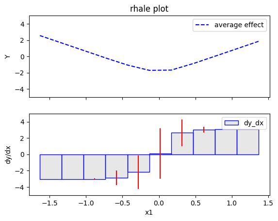
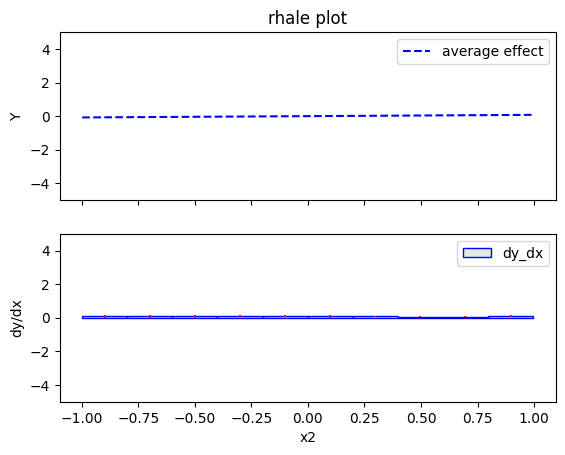
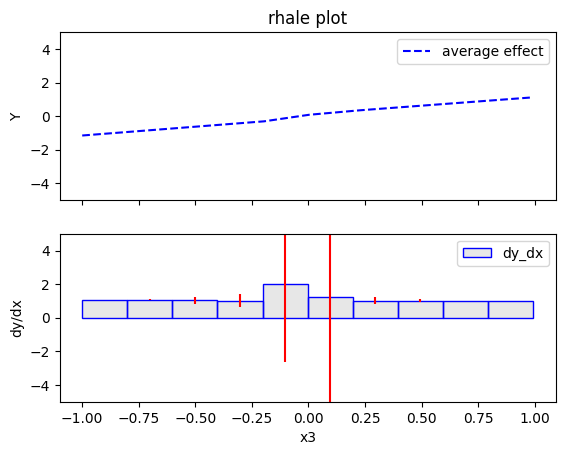
Regional RHALE
regional_rhale = effector.RegionalRHALE(
data=X_cor_train,
model=model_cor,
model_jac= model_cor_jac,
feature_names=['x1', 'x2', 'x3'],
axis_limits=np.array([[-1, 1], [-1, 1], [-1, 1]]).T)
binning_method = effector.binning_methods.Fixed(11, min_points_per_bin=0)
regional_rhale.fit(
features="all",
heter_pcg_drop_thres=0.6,
binning_method=binning_method,
nof_candidate_splits_for_numerical=11
)
100%|██████████| 3/3 [00:00<00:00, 6.31it/s]
regional_rhale.show_partitioning(features=0)
Feature 0 - Full partition tree:
Node id: 0, name: x1, heter: 1.91 || nof_instances: 1000 || weight: 1.00
--------------------------------------------------
Feature 0 - Statistics per tree level:
Level 0, heter: 1.91
regional_rhale.show_partitioning(features=1)
Feature 1 - Full partition tree:
Node id: 0, name: x2, heter: 0.13 || nof_instances: 1000 || weight: 1.00
--------------------------------------------------
Feature 1 - Statistics per tree level:
Level 0, heter: 0.13
regional_rhale.show_partitioning(features=2)
Feature 2 - Full partition tree:
Node id: 0, name: x3, heter: 2.23 || nof_instances: 1000 || weight: 1.00
--------------------------------------------------
Feature 2 - Statistics per tree level:
Level 0, heter: 2.23
Conclusion
SHAP DP
Uncorrelated setting
Global SHAP DP
shap = effector.ShapDP(data=X_uncor_train, model=model_uncor, feature_names=['x1', 'x2', 'x3'], target_name="Y")
shap.plot(feature=0, centering=True, heterogeneity="shap_values", show_avg_output=False, y_limits=[-3, 3])
shap.plot(feature=1, centering=True, heterogeneity="shap_values", show_avg_output=False, y_limits=[-3, 3])
shap.plot(feature=2, centering=True, heterogeneity="shap_values", show_avg_output=False, y_limits=[-3, 3])
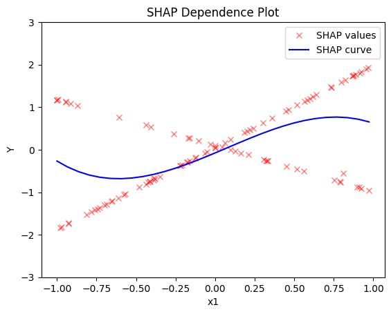
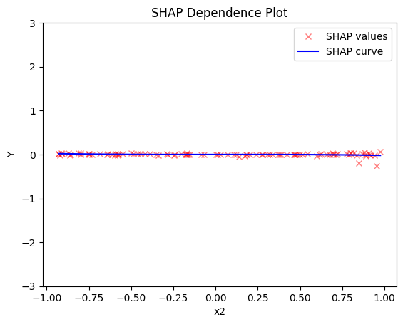
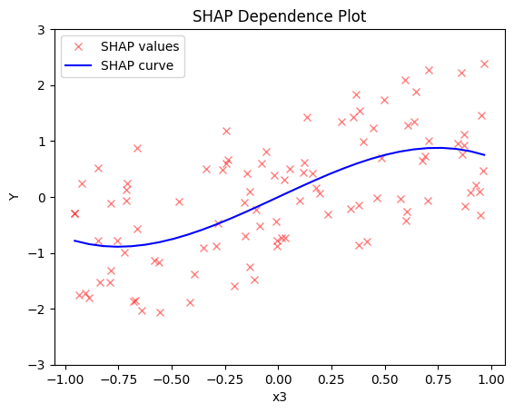
Regional SHAP-DP
regional_shap = effector.RegionalShapDP(
data=X_uncor_train,
model=model_uncor,
feature_names=['x1', 'x2', 'x3'],
axis_limits=np.array([[-1, 1], [-1, 1], [-1, 1]]).T)
regional_shap.fit(
features="all",
heter_pcg_drop_thres=0.6,
nof_candidate_splits_for_numerical=11
)
100%|██████████| 3/3 [00:27<00:00, 9.30s/it]
regional_shap.show_partitioning(0)
Feature 0 - Full partition tree:
Node id: 0, name: x1, heter: 0.82 || nof_instances: 100 || weight: 1.00
Node id: 1, name: x1 | x3 <= -0.0, heter: 0.02 || nof_instances: 51 || weight: 0.51
Node id: 2, name: x1 | x3 > -0.0, heter: 0.01 || nof_instances: 49 || weight: 0.49
--------------------------------------------------
Feature 0 - Statistics per tree level:
Level 0, heter: 0.82
Level 1, heter: 0.02 || heter drop: 0.80 (98.14%)
regional_shap.plot(feature=0, node_idx=1, heterogeneity="std", centering=True, y_limits=[-5, 5])
regional_shap.plot(feature=0, node_idx=2, heterogeneity="std", centering=True, y_limits=[-5, 5])
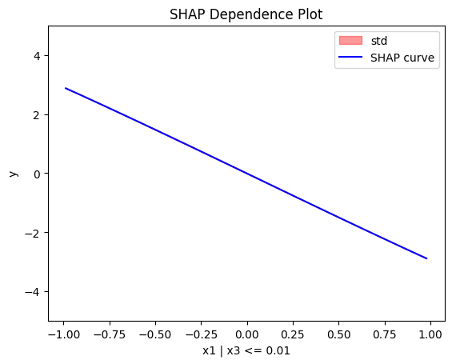
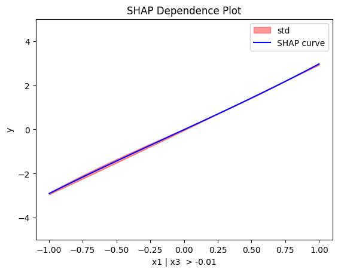
regional_shap.show_partitioning(features=1)
Feature 1 - Full partition tree:
Node id: 0, name: x2, heter: 0.01 || nof_instances: 100 || weight: 1.00
--------------------------------------------------
Feature 1 - Statistics per tree level:
Level 0, heter: 0.01
regional_shap.show_partitioning(features=2)
Feature 2 - Full partition tree:
Node id: 0, name: x3, heter: 0.73 || nof_instances: 100 || weight: 1.00
--------------------------------------------------
Feature 2 - Statistics per tree level:
Level 0, heter: 0.73
Conclusion
Correlated setting
Global SHAP-DP
shap = effector.ShapDP(data=X_cor_train, model=model_cor, feature_names=['x1', 'x2', 'x3'], target_name="Y")
shap.plot(feature=0, centering=True, heterogeneity="shap_values", show_avg_output=False, y_limits=[-3, 3])
shap.plot(feature=1, centering=True, heterogeneity="shap_values", show_avg_output=False, y_limits=[-3, 3])
shap.plot(feature=2, centering=True, heterogeneity="shap_values", show_avg_output=False, y_limits=[-3, 3])
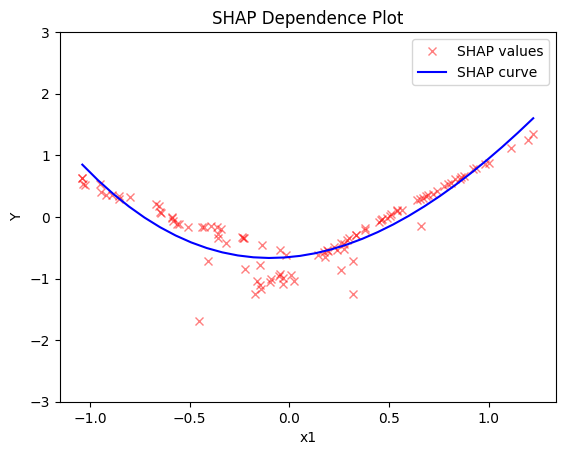
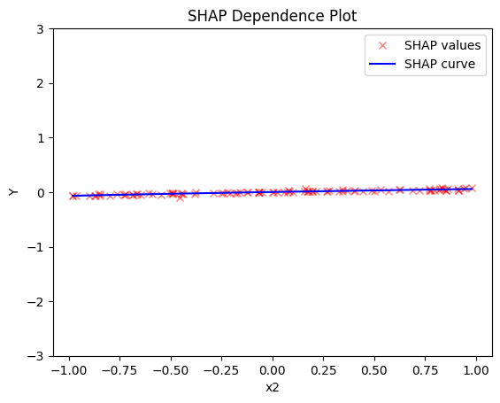
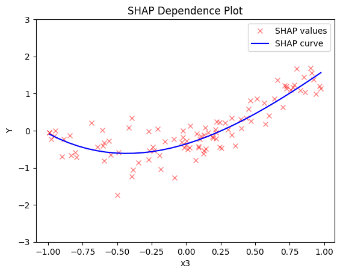
Regional SHAP
regional_shap = effector.RegionalShapDP(
data=X_cor_train,
model=model_cor,
feature_names=['x1', 'x2', 'x3'],
axis_limits=np.array([[-1, 1], [-1, 1], [-1, 1]]).T)
regional_shap.fit(
features="all",
heter_pcg_drop_thres=0.6,
nof_candidate_splits_for_numerical=11
)
100%|██████████| 3/3 [00:26<00:00, 8.68s/it]
regional_shap.show_partitioning(0)
regional_shap.show_partitioning(1)
regional_shap.show_partitioning(2)
Feature 0 - Full partition tree:
Node id: 0, name: x1, heter: 0.17 || nof_instances: 100 || weight: 1.00
--------------------------------------------------
Feature 0 - Statistics per tree level:
Level 0, heter: 0.17
Feature 1 - Full partition tree:
Node id: 0, name: x2, heter: 0.01 || nof_instances: 100 || weight: 1.00
--------------------------------------------------
Feature 1 - Statistics per tree level:
Level 0, heter: 0.01
Feature 2 - Full partition tree:
Node id: 0, name: x3, heter: 0.22 || nof_instances: 100 || weight: 1.00
--------------------------------------------------
Feature 2 - Statistics per tree level:
Level 0, heter: 0.22